پس از ایجاد ارتباط با پایگاه داده و ورود به نرم افزار صفحه ی زیر را مشاهده کنید.

کادر شماره 1: در این کادر سه منو قرار دارد که موارد کاربرد آن ها به این شرح است
منوی فایلهر یک از موارد موجود در منوی فایل را در ادامه توضیح می دهیم.
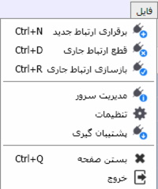برقراری ارتباط جدید (Ctrl + N) : با کلیک روی این گزینه صفحه ایجاد ارتباط باز می شود و می توانید با پایگاه داده ی دیگری نیز وارد سیستم شوید.
قطع ارتباط جاری (Ctrl + D) : با کلیک روی این گزینه ارتباط پایگاه داده جاری با نرم افزار قطع خواهد شد و برای ادامه کار با پایگاه داده مورد نظر لازم است دوباره با آن ارتباط برقرار کنیم.
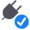 بازسازی ارتباط جاری (Ctrl + R) : این گزینه به منزله اجرای دوباره نرم افزار یا کلید Refresh برای نرم افزار است، زمانی که تغییراتی در تنظیمات نرم افزار ایجاد می کنید، با زدن این گزینه تنظیمات ایجاد شده در نرم افزار اعمال می شود. نکته قابل توجه این است که گزینه «بازسازی ارتباط جاری» برای صفحات باز در نرم افزار تغییرات را اعمال نمی کند بنابراین برای اعمال تغییرات ایجاد شده در صفحه مورد نظر، باید صفحه مربوطه را بسته و دوباره باز کنید.
مدیریت سرور: با انتخاب این گزینه می توانید وارد صفحه مدیریت سرور شوید. گزینه مدیریت سرور در صفحه شروع پایگاه داده قرار دارد و قبلا به طور مفصل توضیح داده شده است.
 تنظیمات:
با کلیک روی این گزینه صفحه
تنظیمات نمایش داده می شود توضیحات مربوط به
این گزینه در قسمت راهنمای
صفحه شروع توضیح داده شده است.
در صورت نیاز به این صفحه مراجعه کنید.
تنظیمات:
با کلیک روی این گزینه صفحه
تنظیمات نمایش داده می شود توضیحات مربوط به
این گزینه در قسمت راهنمای
صفحه شروع توضیح داده شده است.
در صورت نیاز به این صفحه مراجعه کنید.
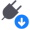 پشتیبان گیری: با کلیک روی این گزینه از پایگاه داده فایل پشتیبان تهیه می شود برای تنظیم مسیر ذخیره سازی فایل پشتیبان به صفحه ی مدیریت سرور مراجعه فرمایید
بستن صفحه (Ctrl + Q)/ خروج : هر صفحه ای که در نرم افزار باز است را می توانید با کلیک روی گزینه بستن صفحه ببندید. باکلیک روی گزینه خروج نیز از نرم افزار خارج می شوید.
این منو در کنار منوی فایل قرار دارد و دارای گزینه های زیر است:

صفحه شروع (Ctrl + H) : با کلیک روی این گزینه به صفحه شروع نرم افزار می روید.
راهنما : با کلیک بر روی این گزینه صفحه راهنمای نرم افزار نمایش داده می شود . این گزینه به صورت کامل در راهنمای صفحه شروع توضیح داده شده است
برو به صفحه بعد (Alt + Right) :
اگر چندین صفحه در نرم افزار به صورت تب باز باشد به کمک این گزینه می توانید بین صفحات از راست به چب جا به جا شوید/ برو به صفحه قبل (Alt + Left) :
اگر چندین صفحه در نرم افزار به صورت تب باز باشد به کمک این گزینه می توانید بین صفحات از چپ به راست جا به جا شوید.
نمایش تمام صفحه (Ctrl + F) : وقتی در صفحه ای از نرم افزار قرار دارید با کلیک راست روی صفحه ی بازشده و انتخاب این گزینه صفحه ی مورد نظر به طور کامل نشان داده می شود. هنگامی که منویی از نرم افزار را انتخاب می کنید صفحه مربوط به آن به صورت تب در صفحه اصلی نرم افزار ظاهر می شود.
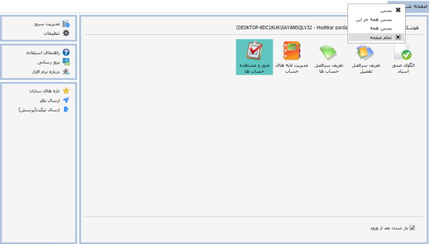همان طور که در شکل بالا مشاهده می کنید صفحه ی شروع به صورت یک تب در صفحه ی نرم افزار نشان داده شده است. با انتخاب نمایش تمام صفحه از منوی نمایش یا زدن علامت در شکل بالا ، می توانید صفحه ی مورد نظر را به صورت پنجره ای جداگانه مشاهده کنید.
نمایش تمام صفحه ی تب نشان داده شده در شکل زیر آمده است. روی شکل با فلش مشخص شده است که در صورت کلیک روی این ناحیه از پنجره، شکل صفحه به حالت قبل باز می گردد.
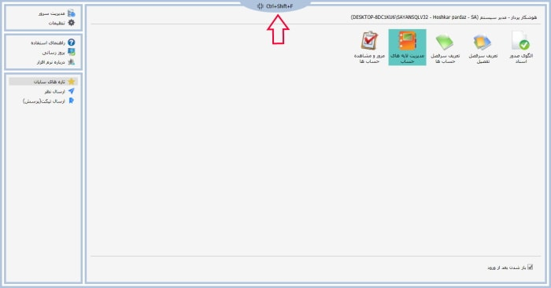در ادامه توضیحات منوی نمایش دو گزینه با عناوین«استفاده از منوی آبشاری» و «استفاده از منوی کلاسیک» وجود دارد.
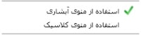در صورتی که گزینه منوی آبشاری را انتخاب کنید، لیست سیستم های موجود در نرم افزار به شکل زیر نمایش داده می شود:
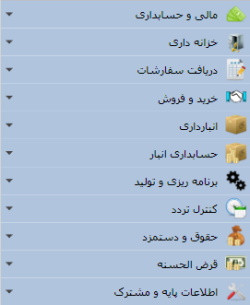در منوی آبشاری اگر هر یک از سیستم ها را انتخاب کنید لیست زیر منو های آن سیستم را به صورت آبشاری مشاهده خواهید کرد.
از آن جا که منوی پیش فرض نرم افزار پس از نصب منوی آبشاری می باشد، در تمامی صفحات راهنمای نرم افزار از منوی آبشاری استفاده شده است.
و اگر از منوی نمایش گزینه منوی کلاسیک را انتخاب نمایید، لیست سیستم های نرم افزار را به صورت شکل زیر خواهید داشت.
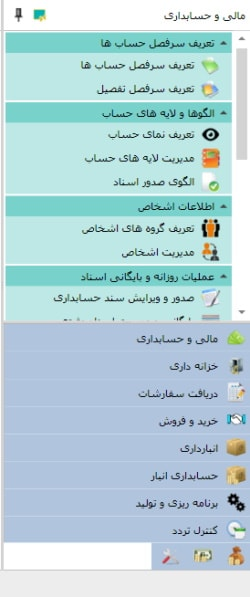همان طور که در شکل بالا مشاهده می کنید در منوی کلاسیک، نام زیرسیستم در انتهای لیست، و زیر منوهای مربوط به منوی انتخاب شده در بالای لیست نمایش داده می شود. در شکل مقابل سیستم «مالی و حسابداری» در حالت انتخاب است.
درباره نرم افزار:
با کلیک روی این گزینه صفحه زیر باز می شود
که حاوی اطلاعاتی در مورد نرم افزار است.
صفحه «درباره نرم افزار» در صفحه شروع پایگاه داده نیز قرار دارد و شامل اطلاعات زیر است:
خط اول نشان دهنده نسخه پایگاه داده و خط دوم مشخص کننده نسخه نرم افزار است. باقی اطلاعات شامل آدرس سایت شرکت، ایمیل ها و اطلاعاتی از این قبیل می باشد.
منوی ابزارها تنها شامل یک زیر منو می باشد که آن گزینه «راس گیری» می باشد. نرم افزار سایان این امکان را برای کاربر ایجاد می کند که بتواند از چک های دریافتنی و کلیه فاکتور ها راس گیری نماید.
 : با کلیک روی این گزینه پنجره ای به شکل زیر نمایان می شود:
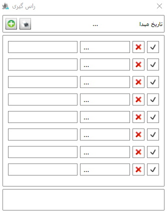
: با کلیک روی این گزینه پنجره ای به شکل زیر نمایان می شود:
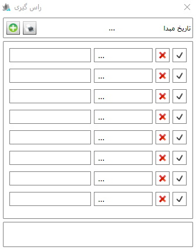
در پنجره راس گیری نمایش داده شده در شکل بالا، می توانید
تاریخ مبدا مورد نظرتان را در کادر بالای پنجره
با کلیک روی علامت ... تعیین کنید.
همچنین در هر یک از ردیف های صفحه می توانید تاریخ
و مبلغ چک را وارد کرده و در انتها از لیست
چک ها راس گیری نمایید. با استفاده از ابزار
می توانید به ردیف های موجود در لیست اضافه کنید و با ابزار
 ردیف دلخواه را از لیست چک ها حذف نمایید.
ردیف دلخواه را از لیست چک ها حذف نمایید.
کادر شماره 2: در این کادر مشخصات پایگاه داده ای که با آن ارتباط داریم نمایش داده می شود. ترتیب اطلاعات از راست به چپ نام شرکت و نام کاربر تعریف شده در پایگاه داده است و محتویات داخل پرانتز از چپ به راست نام پایگاه داده در اس.کیو.ال، نام کاربر در دسترسی اس.کیو.ال سروری (SA) و نام سرور می باشد. لازم به یادآوری است که شما می توانید با یک بار اجرای نرم افزار سایان، هم زمان با چندین پایگاه داده ارتباط برقرار کنید. در حالتی که شما به چند پایگاه داده مرتبط باشید، می توانید بین آن ها سوییچ انجام دهید. اگر روی نام پایگاه داده کلیک کنید، لیست پایگاه داده هایی که با آن ها ارتباط برقرار کرده اید را به شما نشان می دهد. به شکل زیر توجه نمایید:
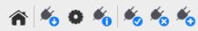در شکل بالا، نام پایگاه داده فعال در بالای کادر نمایش داده می شود. پایگاه داده غیر فعال به رنگ مشکی است، با کلیک روی پایگاه داده غیر فعال می توانید روی آن سوییچ کنید.
کادر شماره 3: این کادر لیست سیستم های موجود در نرم افزار را نمایش می دهد. تعداد و انواع آن ها مربوط به بسته نرم افزاری خریداری شده شما می باشد.
در بالای کادر شماره 3 تصویر 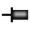 قرار دارد که اگر روی آن کلیک کنید جهت آن افقی می شود ، حال اگر اشاره گر موس را از کادر شماره 3 برداریم، کادر شماره 3 مخفی می شود و در آن صورت شما فضای بیشتری برای میز کار خود در اختیار خواهید داشت. به شکل زیر توجه کنید، شکل در حالت عمودی منو را در حالت ثابت نمایش می دهد :
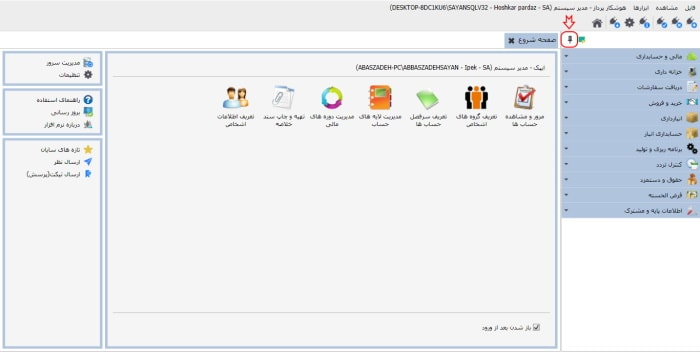
مطابق شکل زیر گزینه ای که با فلش قرمز رنگ مشخص شده است
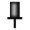
میز کار می باشد
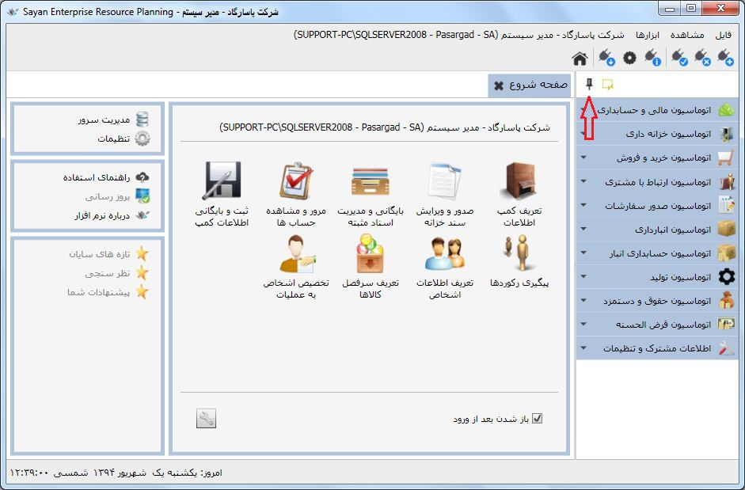
این گزینه به شما کمک می کند میز کار خود را شخصی سازی کنید
برای شخصی سازی ابتدا روی گزینه ی میز کار کلیک کنید
گزینه ای با آیکن در کنار آن نمایان می شود که تنظیم میز کار نام دارد
با کلیک روی این گزینه تصویر زیر نمایان می شود
در تصویر بالا هر یک از زیر سیستم هایی که می خواهید
در منوی سمت راست شما حاضر شود را فعال کنید
لازم به ذکر است زیر سیستم هایی که آنها را فعال کرده اید در صفحه ی شروع
نیز فعال می شوند
این گزینه ها به ترتیب از چپ به راست «صفحه شروع»، «پشتیبان گیری»، «تنظیمات»، «بازسازی ارتباط جاری»، «قطع ارتباط جاری»، «برقراری ارتباط جدید» می باشند که در منوی فایل در مورد آنها توضیح داده شد. این ابزارها دسترسی سریع و راحت تر به این گزینه ها را فراهم می کند.